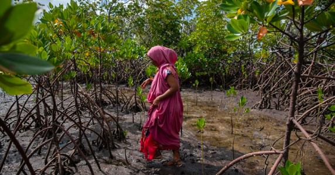
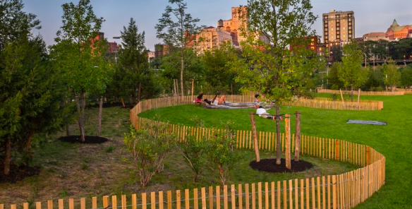

Knowing our world in order to benefit humanity
Key Indicators of Global Climate Health
Such high-tide flooding that inundates roads and buildings along the west coast of the Americas tends to be uncommon outside of El Niño years, but that could change by the 2030s.
Methane ‘hot spots’ in the Yukon-Kuskokwim Delta are more likely to be found where recent wildfires burned into the tundra, altering carbon emissions from the land.
NISAR will help researchers explore how changes in Earth’s forest and wetland ecosystems are affecting the global carbon cycle and influencing climate change.
What evidence supports the existence of climate change and
the impact of human activities on it?
What are the primary causes of climate change according to scientific consensus?
What are the potential impacts of climate change on the environment and human health?
What are some solutions to climate change, and how can we effectively address this pressing global issue?
Our Vision for the Climate in 2030
 With the synergy of nature's force and the influence of robust policies and markets, we aim to annually decrease or sequester 3 billion metric tons of carbon.
More plants for a resilient climate
Enhancing plant growth and diversity is essential for building climate resilience and mitigating the impact of climate change.
The annual Arctic sea ice minimum (lowest) annual extent was the sixth-lowest on record this year, while Antarctic sea ice reached its lowest maximum ever. These both continue a long-term downward trend due to human-caused global warming.
Streamlines calculations and presents results through intuitive tables and charts. These visual aids effectively communicate data, enabling informed decision-making. Based on the calculated outcomes, we can suggest scenarios, empowering users to make impactful choices in addressing climate change.
What is the difference between climate change and climate variability?
Climate change happens over time, generally over decades or more. Climate variability, on the other hand,
comprises changes that occur over shorter time periods, such as a month, season, or year. Climate
variability describes the system's natural fluctuation. One abnormally cold or rainy year followed by
an unusually warm or dry year, for example, would not be seen as an indicator of climate change.
Why has my town experienced record-breaking cold and snowfall if the climate is warming?
Despite global warming, certain locations may see unusually cold or snowy winters. These cold periods are
caused by local weather pattern variability, which can result in colder-than-average seasons or even
colder-than-average years at the local or regional level. In reality, a warmer environment holds more
water vapour in the air, which can cause heavier snowfall in some regions. A warmer climate can lead to
larger snowstorms as long as it is cold enough to snow.
Do natural variations in climate contribute to today’s climate change?
Natural cycles of warming and cooling occur on Earth as a result of variables such as variations in the
sun's position or volcanic activity. There were instances in the distant past, for example, when the
world was warmer than it is now. Natural temperature changes, however, do not explain today's climate
change. The majority of the warming since 1950 has been driven by human emissions of greenhouse gases from
various activities, notably the usage of fossil fuels.
Why be concerned about a degree or two change in the average global temperature?
A degree or two change in average global temperature may not seem like much of a concern, but relatively
small changes in the earth's average temperature can cause significant changes in local and regional
climate, posing threats to public health and safety, water resources, agriculture, infrastructure, and
ecosystems. The 2018 National Climate Assessment cites numerous examples, including an increase in heat
waves and days with temperatures above 90°F; more extreme weather events such as storms, droughts, and
floods; and a projected sea level rise of 1 to 4 feet by the end of the century, which could submerge
certain areas of the country.
How can people reduce the risks of climate change? People may lessen the dangers of climate change by adopting decisions that reduce greenhouse gas emissions and planning for future changes. People's decisions now will impact the globe for decades, if not centuries, to come. Communities may also prepare for changes in the next decades by identifying and mitigating vulnerabilities and incorporating climate change risks into planning and development. Such steps can safeguard the most vulnerable groups, such as small children, the elderly, and those living in poverty, from the health and safety risks posed by climate change.
What are the benefits of taking action now? The longer people wait to address climate change, the more detrimental its impacts on the earth and people's health will be. If individuals do not act quickly, more harsh and costly actions to keep greenhouse gases from surpassing harmful levels may be required later. According to the most recent National Climate Assessment, global efforts to reduce greenhouse gas emissions could save tens of thousands of lives in the United States each year by the end of the century, as well as billions of dollars in damages from water scarcity, wildfires, agricultural losses, flooding, and other effects. People may take a variety of steps right now to help lower the danger of climate change while also enhancing the natural environment and community infrastructure.
The Climate Neutral website features an app for multi-objective decision-making analysis. Users access this website through user authentication and input their evaluation categories and scenario details. This processes the data, presenting results through tables and charts, and recommends a scenario based on the calculations.
© 2023 Climate Neutral | Terms of Use